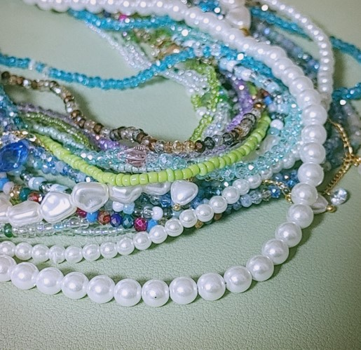
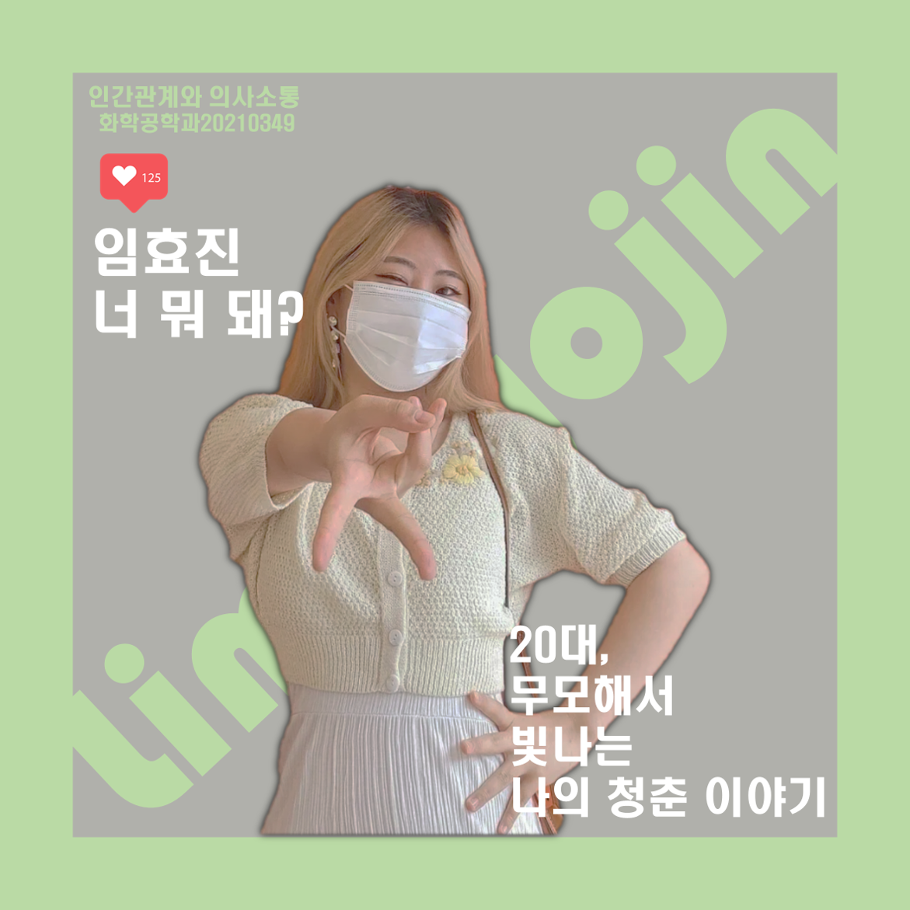
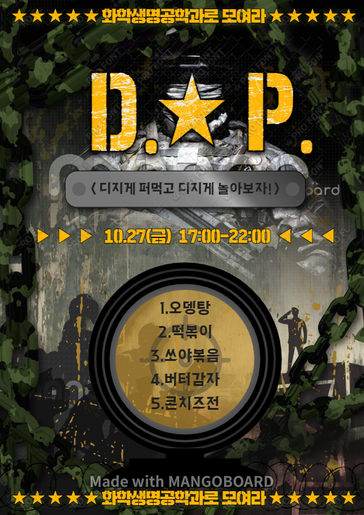

1. 사진
1 / 10

수정구슬
2 / 10

수정구슬
3 / 10

부산
❮
❯
고등학교 시절 답답한 마음에 옥상에 올라갔었는데 저녁 노을이 지는 풍경을 보고 참 예쁘다는 생각이 들었었다.
그 이후로 풍경 및 강아지 사진을 많이 찍고다니기 시작했고, 처음엔 초보가 찍은 엉성한 사진들이 대부분이였으나 점차 사진 찍는 실력 및 보정실력도 늘어났다.
어느날 '자연으로 보는 철학'이라는 대회를 보게 되었고, 내가 평소 찍었던 풍경 사진들을 갖고 대회에 참여하였는데, 운좋게 입상하게 되었다.
해당일을 계기로 아직까지 사진 찍기는 나의 취미가 되어서 혼자 사진찍으러 여기저기 여행을 다니기도 하게 되었다.
2. 만들기

어릴때부터 만들기를 좋아했고, 손재주가 좋다는 이야기도 많이 들었었다.
나를 꾸미는 것도 좋아하는 성격이였기 때문에 처음엔 내가 착용할 목적으로 악세서리나 키링 등을 만들기 시작하였는데, 주변사람들이 선물받고 만족하는 모습을 보니 욕심이 생겼었다.
성인이 되어 코로나19로 인하여 학교를 가지 못하던 시기에 조그만하게 악세서리 사업을 시작하게 되었었다. 인터넷으로 주문을 받고, 파는데 수익이 크진 않았지만 재미있었다.
물론 코로나19 당시였기에 사람들이 악세서리를 많이 착용하지 않아 사업이 성공적이진 않았지만 내 나름의 경험이 되어 뿌듯했다.
3. 카드뉴스 및 포스터 만들기
나는 예전부터 여러 사회문제나 이슈들을 보고 친구나 부모님과 이야기하는 것을 좋아했다.
하지만, 친구와 만나서까지 어둡고 무거운 주제를 얘기하고 싶어하는 친구가 많지 않았다.
그래서 혼자서 내 생각을 정리하기 위해 카드뉴스를 만들기 시작했고, 지금은 자료가 날아갔지만 실력이 점차 많이 상승되었다.
또한, 학생시절부터 포스터를 만들어보는 것을 좋아하여 조금씩 만들었어서 뛰어나게 잘하는 것은 아니지만, 그럭저럭 만들 수 있는 실력이 되었다.

이 카드뉴스는 대학교 2학년 시절 나의 단점을 장점으로 승화시키는 프레젠테이션에서 사용하기 위해 만든 카드뉴스다.
당시 교수님이 나의 카드뉴스를 좋게 봐주셨고, 해당 점수를 잘받아 A+ 성적을 받을 수 있었다.

이 카드뉴스는 대회 참가용으로 만든 카드뉴스이다.
html 과제를 하는 당시에는 아직 대회의 결과가 나오지 않았지만, 대회에 참가하며 새로운 지식을 아는 계기가 되어 좋은 경험이였다.

해당 포스터는 학교 축제때 학과 부스를 홍보하기 위하여 만든 포스터이다.
포스터를 만들 당시엔 중간고사 시즌이였어서 조금은 힘들었지만 결과물이 만족스러워 뿌듯했다.